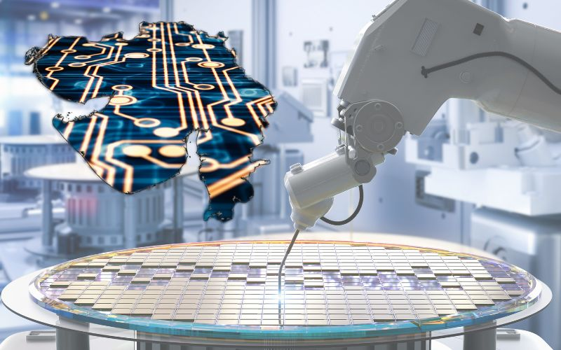
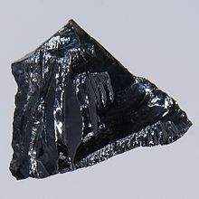

Introduction
A semiconductor material has an electronical conductivity value falling between that of a conductor,such hasFor devices using semiconductors and their history, see Semiconductor device. For other uses, see Semiconductor (disambiguation).
A semiconductor material has an electrical conductivity value falling between that of a conductor, such as metallic copper, and an insulator, such as glass. Its resistivity falls as its temperature rises; metals behave in the opposite way. Its conducting properties may be altered in useful ways by introducing impurities ("doping") into the crystal structure. When two differently doped regions exist in the same crystal, a semiconductor junction is created. The behavior of charge carriers, which include electrons, ions, and electron holes, at these junctions is the basis of diodes, transistors, and most modern electronics. Some examples of semiconductors are silicon, germanium, gallium arsenide, and elements near the so-called "metalloid staircase" on the periodic table. After silicon, gallium arsenide is the second-most common semiconductor and is used in laser diodes, solar cells, microwave-frequency integrated circuits, and others. Silicon is a critical element for fabricating most electronic circuits.
Semiconductor devices can display a range of useful properties, such as passing current more easily in one direction than the other, showing variable resistance, and having sensitivity to light or heat. Because the electrical properties of a semiconductor material can be modified by doping and by the application of electrical fields or light, devices made from semiconductors can be used for amplification, switching, and energy conversion.
The conductivity of silicon is increased by adding a small amount (of the order of 1 in 108) of pentavalent (antimony, phosphorus, or arsenic) or trivalent (boron, gallium, indium) atoms. This process is known as doping, and the resulting semiconductors are known as doped or extrinsic semiconductors. Apart from doping, the conductivity of a semiconductor can be improved by increasing its temperature. This is contrary to the behavior of a metal, in which conductivity decreases with an increase in temperature.

The modern understanding of the properties of a semiconductor relies on quantum physics to explain the movement of charge carriers in a crystal lattice.[1] Doping greatly increases the number of charge carriers within the crystal. When a doped semiconductor contains free holes, it is called "p-type", and when it contains free electrons, it is known as "n-type". The semiconductor materials used in electronic devices are doped under precise conditions to control the concentration and regions of p- and n-type dopants. A single semiconductor device crystal can have many p- and n-type regions; the p–n junctions between these regions are responsible for the useful electronic behavior. Using a hot-point probe, one can determine quickly whether a semiconductor sample is p- or n-type.[2]
Some of the properties of semiconductor materials were observed throughout the mid-19th and first decades of the 20th century. The first practical application of semiconductors in electronics was the 1904 development of the cat's-whisker detector, a primitive semiconductor diode used in early radio receivers. Developments in quantum physics led in turn to the invention of the transistor in 1947[3] and the integrated circuit in 1958.
Properties
Variable electrical conductivity
Heterojunctions
Excited electrons
Light emission
High thermal conductivity
Thermal energy conversion
Materials
preparation of semiconductor materials
Silicon crystals are the most common semiconducting materials used in microelectronics and photovoltaics.
A large number of elements and compounds have semiconducting properties, including:[7] Certain pure elements are found in group 14 of the periodic table; the most commercially important of these elements are silicon and germanium. Silicon and germanium are used here effectively because they have 4 valence electrons in their outermost shell, which gives them the ability to gain or lose electrons equally at the same time. Binary compounds, particularly between elements in groups 13 and 15, such as gallium arsenide, groups 12 and 16, groups 14 and 16, and between different group-14 elements, e.g. silicon carbide. Certain ternary compounds, oxides, and alloys. Organic semiconductors, made of organic compounds. Semiconducting metal–organic frameworks.[8][9] The most common semiconducting materials are crystalline solids, but amorphous and liquid semiconductors are also known. These include hydrogenated amorphous silicon and mixtures of arsenic, selenium, and tellurium in a variety of proportions. These compounds share with better-known semiconductors the properties of intermediate conductivity and a rapid variation of conductivity with temperature, as well as occasional negative resistance. Such disordered materials lack the rigid crystalline structure of conventional semiconductors such as silicon. They are generally used in thin film structures, which do not require material of higher electronic quality, being relatively insensitive to impurities and radiation damage.